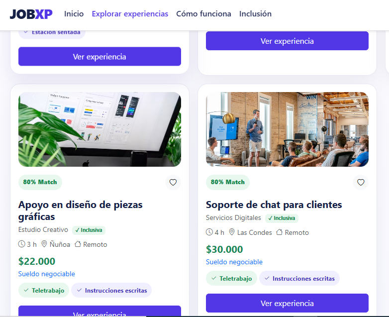

✦
Conexión laboral
JobXp conecta a jóvenes mayores de 18 años sin experiencia laboral con pequeñas y medianas empresas.
Plataforma de inclusión asistida que conecta a jóvenes sin experiencia con oportunidades laborales reales en Chile.

JobXp conecta a jóvenes mayores de 18 años sin experiencia laboral con pequeñas y medianas empresas.
Experiencias laborales acotadas y certificadas que permiten adquirir habilidades y construir un primer historial.
El proyecto considera barreras arquitectónicas, cognitivas, sensoriales y de comunicación.
Entrar al mundo laboral por primera vez puede ser especialmente difícil cuando no existen experiencia previa, redes de contacto o condiciones de accesibilidad.
JobXp promueve oportunidades de empleo productivo, inclusión laboral y acceso de los jóvenes a experiencias que fortalecen su preparación para el trabajo.
Una página web de microexperiencias laborales que facilita el encuentro entre talento joven y negocios locales, con un enfoque transparente, accesible y regulado. La plataforma busca que una primera experiencia laboral sea más fácil de encontrar, comprender y aprovechar, permitiendo que los jóvenes conozcan oportunidades, desarrollen habilidades y construyan antecedentes que les ayuden en futuras postulaciones. Al mismo tiempo, las empresas pueden encontrar personas interesadas en aprender y participar en experiencias acotadas, generando un vínculo inicial que puede transformarse en nuevas oportunidades laborales.
La inclusión asistida atraviesa toda la propuesta para reducir barreras de acceso y participación.
Las microexperiencias ayudan a convertir oportunidades breves en aprendizaje y antecedentes verificables.
Aquí puedes acceder directamente al prototipo principal de JobXp y revisar cómo funciona la propuesta de microexperiencias laborales inclusivas. El prototipo permite visualizar la experiencia que tendría un usuario al utilizar la plataforma.
Abrir prototipo ↗Liderazgo del proyecto y desarrollo general de la página web con HTML, CSS y JavaScript.
Planificación y preparación de la presentación del proyecto.
Apoyo en la planificación y desarrollo de la presentación.
Apoyo en la planificación y desarrollo de la presentación.
Una propuesta centrada en la inclusión y en el acceso a primeras experiencias laborales.

.png)
.png)